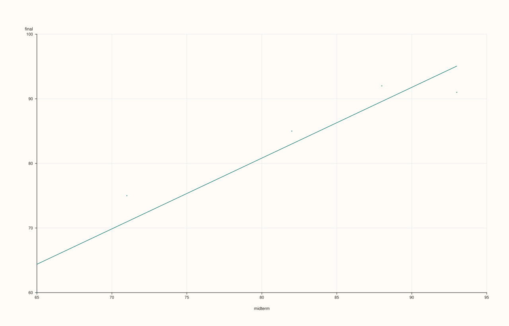
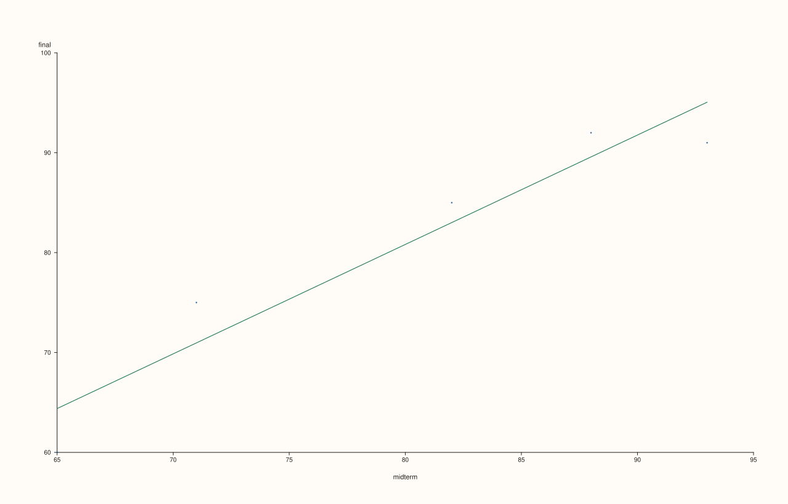

ThreadPlotAccessor::scatter¶
Back to ThreadPlotAccessor API Reference
Signatures¶
ThreadPlotAccessor::scatter(const Thread& x) const -> pluss::pl::Studio
ThreadPlotAccessor::scatter(const Thread& x, const ScatterPlotOptions& options) const -> pluss::pl::Studio
ThreadPlotAccessor::scatter(const Thread& x, const Thread& hue) const -> pluss::pl::Studio
ThreadPlotAccessor::scatter(const Thread& x, const Thread& hue, const ScatterPlotOptions& options) const -> pluss::pl::Studio
What It Does¶
Draws one point per row at (x, value), where value is the bound thread, optionally
split into separate, distinctly colored/labeled point groups by a companion hue thread.
The single-series specialization of
DataFramePlotAccessor::scatter.
Unlike every other method on this accessor, scatter() has no zero-argument overload
— x is always required, since a scatter plot needs two independent axes, not one axis
plus a case index the way line()/step()/area() fall
back to row labels.
See line()’s important callout for the shared naming and row-label
inheritance rules — here, x wraps to a column named "x" (or its own name())
and hue wraps to a column named "hue" (or its own name()), following the
exact same fallback-naming pattern.
Important
hue must be Note-, Timeline-, or TimeIndex-kind, same as the 2D accessor
Because scatter() always delegates to
DataFramePlotAccessor::scatter’s explicit
hue_feature argument (never through default_hue_feature), a hue thread that resolves
to a plain numeric Series throws "DataFrame::plot().scatter: hue feature 'hue' must be note-like or time-like" — see that page’s important callout for the full rule. If you want
to color by a numeric value, bucket or cast it to text first.
Parameters¶
x (const Thread&, required)
The companion thread for the horizontal axis. Must match the bound thread’s size, or
the call throws "Thread::plot: thread size mismatch".
hue (const Thread&, optional)
Optional companion thread splitting points into separate colored/labeled groups. Must
be Note-, Timeline-, or TimeIndex-kind — see the important callout above.
options (ScatterPlotOptions)
The identical struct documented on
DataFramePlotAccessor::scatter
(alpha, line_width, fit_line, fit_order, fit_ci, fit_confidence_level).
Returns¶
pluss::pl::Studio
A figure with one pane: a single point trace with no hue, or one point trace per
distinct hue value when hue is given.
Examples¶
Example 1. Plain scatter, no hue.
using namespace pluss::table;
auto midterm = Thread(pluss::make_series({71.0, 82.0, 93.0, 65.0, 88.0}));
midterm = midterm.name("midterm");
auto final_ = Thread(pluss::make_series({75.0, 85.0, 91.0, 60.0, 92.0}));
final_ = final_.name("final");
auto chart = final_.plot().scatter(midterm);
chart.show();
Every row becomes one point at (midterm, final); no legend is shown since there’s no hue.

Example 2. With a categorical hue thread.
auto cohort = Thread(pluss::make_note({"Morning", "Evening", "Morning", "Evening", "Morning"}));
cohort = cohort.name("cohort");
auto chart = final_.plot().scatter(midterm, cohort);
chart.show();
Two traces are drawn — "Morning" and "Evening" — each its own color, with a legend
shown automatically.

Example 3. An explicit ScatterPlotOptions.
ScatterPlotOptions options;
options.alpha = 0.6;
options.line_width = 1.5;
auto chart = final_.plot().scatter(midterm, cohort, options);
chart.show();

Important
fit_line overlays a line of best fit — one per hue group, if hue is set
Same as DataFramePlotAccessor::scatter:
ScatterPlotOptions::fit_line = true fits and draws a line of best fit directly on top of
the point cloud, without leaving this accessor — linear by default (fit_order = 1), one
shared fit with no hue, or one separate, color-matched fit per hue group when hue is
given. fit_ci = true additionally shades a confidence band around each fit. See
Examples 4–5.
Example 4. fit_line = true, no hue.
ScatterPlotOptions options;
options.fit_line = true;
auto chart = final_.plot().scatter(midterm, options);
chart.show();

Example 5. fit_line = true together with a hue thread: one fit line per hue group,
color-matched to its own group’s points.
ScatterPlotOptions options;
options.fit_line = true;
auto chart = final_.plot().scatter(midterm, cohort, options);
chart.show();

Note
Need more than fit_line offers? PlussPl’s flash::regplot has robust and LOWESS fits too
For fit shapes beyond a polynomial least-squares fit (robust regression, LOWESS, a
bootstrap confidence interval), ScatterPlotOptions has no field for it — reach for
PlussPl’s pluss::pl::flash::regplot(pane, x, y, options) directly on a pane you create
yourself, passing each thread’s values as a pluss::Series (via thread.value(), assigned
to an explicit pluss::Series variable rather than auto — see Example 6).
Example 6. Reaching past fit_line for PlussPl’s flash::regplot directly.
#include "pluss/pl/flash/flash.h"
pluss::Series midterm_series = midterm.value();
pluss::Series final_series = final_.value();
auto fig = pluss::pl::studio("scores_fit");
auto& pane = fig.pane2();
pane.x_label("midterm").y_label("final");
pluss::pl::flash::regplot(pane, midterm_series, final_series);
fig.show();

regplot draws the scatter cloud and a linear fit through it as two separate traces on
the same pane — exactly what fit_line = true does internally (Example 4). The
difference is RegPlotOptions’s extra fields fit_line doesn’t expose (robust,
lowess, bootstrap show_ci) — see
DataFramePlotAccessor::scatter’s Example 9 for
the full RegPlotOptions field list.
Notes¶
No zero-argument overload —
xis always required, unlike every other chart method on this accessor.huemust resolve to a Note-, Timeline-, or TimeIndex-kind thread, or the call throws.A mismatched-size
xorhuethrows"Thread::plot: thread size mismatch".fit_line = trueoverlays a line of best fit — one per hue group whenhueis given. For fit shapes beyond a polynomial least-squares fit, see the note above and Example 6 forPlussPl’sflash::regplot/flash::lmplotinstead.Returns a
pluss::pl::Studio— seeline()for how to view or save the result.
See Also¶
DataFramePlotAccessor::scatter: the method this delegates to, including the fullhue_featuretype-requirement explanation and the fullerflash::regplotwriteup in its Example 9.ThreadPlotAccessor::line: connected points against an optional companion thread, instead of an unconnected cloud against a required one.